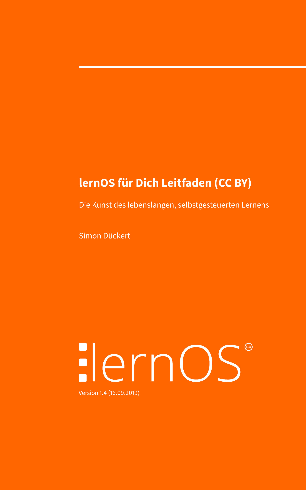

lernOS für Dich
Die Kunst des selbstgesteuerten, lebenslangen Lernens
Designed by Simon Dückert et.al.
lernOS für Dich ...
... ist eine Selbstmanagement-Methode
für lebenslanges Lernen.
Das 21. Jahrhundert
VUCA Bild Links, VUCA Bild Rechts, https://kaipartners.com/4-ways-adapt-vuca/
 |
 |
- Globalisierung und technischer Fortschritt führen zu ständiger Veränderung (VUCA)
- Das Wissen aus Ausbildung/Studium reicht nicht für ein Berufsleben (Halbwertszeit von Wissen)
- Dieser Lernprozess muss von den Menschen weitestgehend selbst organisiert werden
A Fool with a Tool ...
 |
 |
21st Century Skills

Lernen in Sprints
Planungswoche, Ziele setzen, Ergebnisse erzeugen, drei verschiedene Lernpfade
- lernOS basiert auf Scrum, OKR, GTD & WOL
- Ein lernOS Sprint dauert 13 Wochen (Woche 0-12)
- Einen Sprint kann man alleine oder im lernOS Circle mit 4-5 Personen machen (Soziales Lernen)
- Pro Sprint verfolgt man ein oder mehrere Lernziele
lernOS Leitfäden
|  |
|
Let's DO lernOS
| Kata (Übung) |
|---|
| 10 Fakten über mich |
| Was will ich lernen? |
| Mein Lernziel |
| Meine Netzwerkliste |
| Next Actions |
10 Fakten über mich
Welche Fakten über dich helfen bei der Vernetzung?
- Bildet Gruppen mit je ca. 5 Personen
- Erstelle eine Liste von zehn Fakten über Dich selbst
- Anregungen: Lebenserfahrungen, Vorlieben, Abneigungen, Geburtsort, Familie, Kinder, Schulen, Universitäten, Arbeitgeber, Urlaub, Hobbys, Lustiges
- Stellt euch vor und findet Gemeinsamkeiten auf Basis der Fakten
Was will ich lernen?
Canvas
- ...
Mein Lernziel
Welches Lernziel willst du in 12 Wochen erreichen?
- Suche dir ein Lernziel (Objective) für den nächsten lernOS Sprint und schreibe es auf
- Verwende die Felder Aufgaben, Rollen und Projekte im lernOS Canvas zur Zielfindung
- Formuliere drei messbare Key Results zu deinem Objective
- Diskutiert die Eignung eurer Ziele
Meine Netzwerkliste
Wer kann mit Erfahrung bei deinen Zielen helfen?
- Erstelle eine Liste von 10+ Personen, die bei deinen Zielen helfen können
- Auf der Liste können Einzelpersonen oder Gruppen/Commmunities stehen
- Stellt eure Listen vor und helft euch beim vervollständigen
Next Actions
...
- ...
Lernen mit Shu Ha Ri
Schriftzeichen, Erklärung, Übertrag auf lernOS
Lernenformen
- Einzelkämpfer
- Lerntandem
- Circle (empfohlen)
lernOS Stories
"Zitat Zitat Zitat Zitat"
Vorname Nachname (Org)
"Zitat Zitat Zitat Zitat"
Vorname Nachname (Org)
"Zitat Zitat Zitat Zitat"
Vorname Nachname (Org)
Stop talking, start doing!
- Folge @lern_os auf Twitter
- Melde dich zum lernOS Newsletter an
- Werde Teil der lernOS Community
- Suche/biete Circles im lernOS CircleFinder
lernOS in a Nutshell
- lernOS ist ein "Betriebssystem" für Lebenslanges Lernen und Lernende Organisationen
- Mi lernos heißt "Ich werde lernen" auf Esperanto
- Das "OS" symbolisiert die Bedeutung der Digitalisierung bzw. der Digitalität
- Inhalte unter CC BY Lizenz frei & offen verfügbar
- Mehr unter lernos.org
lernOS - What?
- Leitfaden als PDF, HTML, Slideshare, ePub, Mobi
- Leitfaden als Audiobook (experimentell)
- OneNote Circle Template
- lernOS Canvas
- Circlefinder von @LeonidLezner
- Community CONNECT